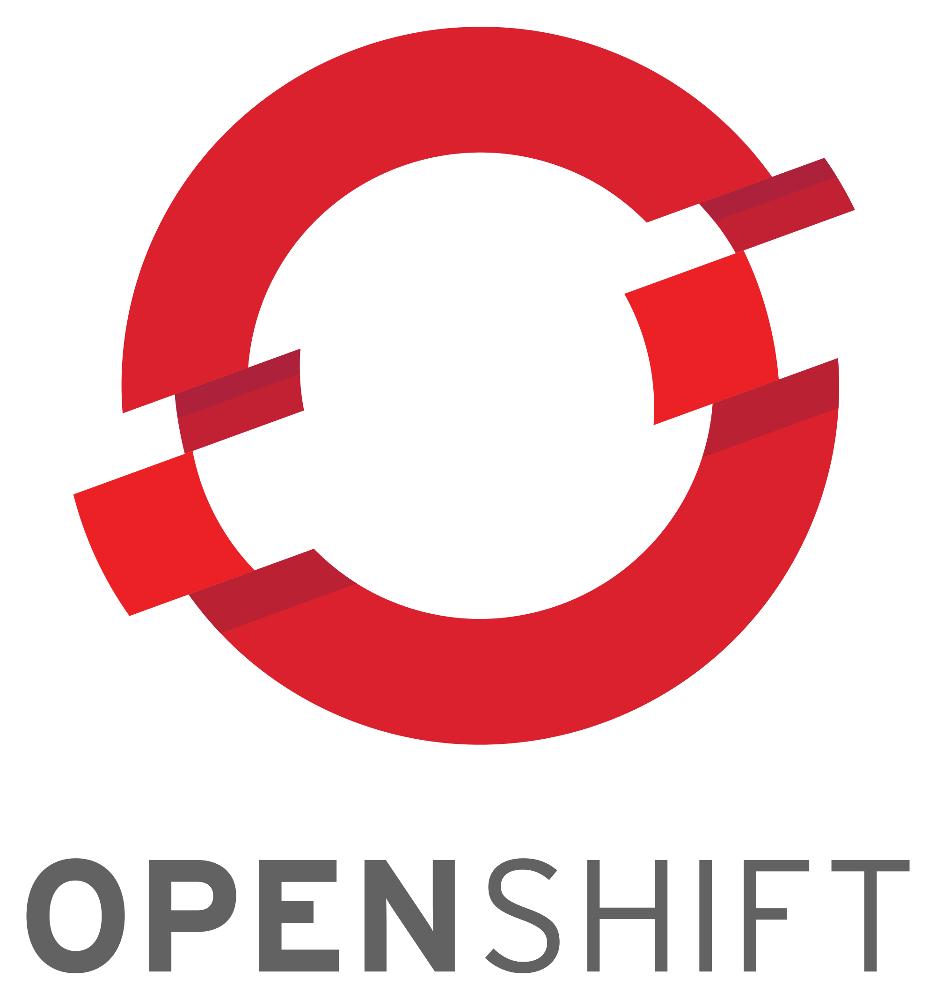
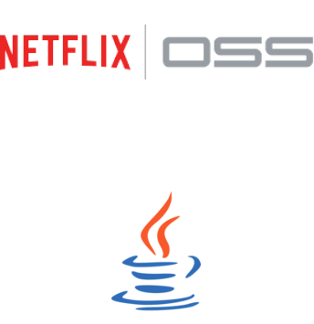
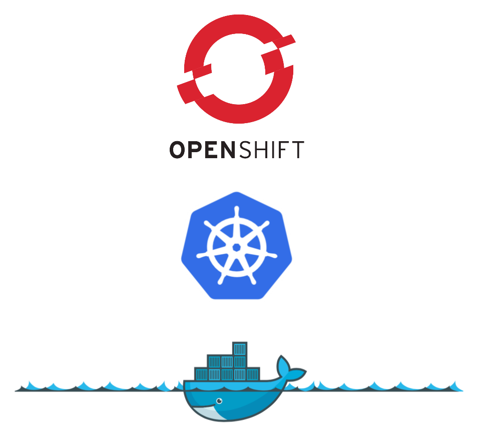
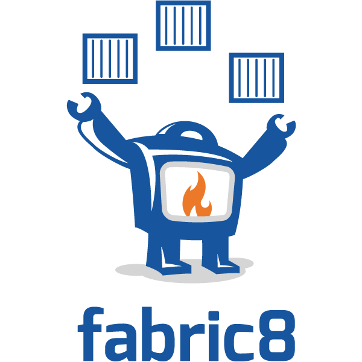

Capgemini Open Day
Poznań, 13th of June 2017
Krzysztof Sobkowiak (@ksobkowiak)
The Apache Software Foundation Member
Senior Solution Architect at Capgemini
|  |
Capgemini Open Day
Poznań, 13th of June 2017
Krzysztof Sobkowiak (@ksobkowiak)
The Apache Software Foundation Member
Senior Solution Architect at Capgemini
|

Views in this presentation are my personal views and do not necessarily reflect the views of Capgemini.

Creating business value through software is about speed, safety, iteration, and continuous improvement
How to run them all locally?
How to package them (dependency management)
How to test?
Vagrant? VirtualBox? VMs?
Specify configuration
Process isolation
Service discovery
Multiple versions?
|
| |


Dockerfile
FROM openjdk:latest
ADD target/ipservice-boot-docker-0.0.1-SNAPSHOT.jar .
EXPOSE 8090
CMD /usr/bin/java -Xmx400m -Xms400m -jar ipservice-boot-docker-0.0.1-SNAPSHOT.jarBuild image
$ docker build . -t capgemini/ipservice-boot-docker
$ docker images
REPOSITORY TAG IMAGE ID CREATED SIZE
capgemini/ipservice-boot-docker latest e0e8d458c945 4 seconds ago 625MB
openjdk latest ab0ecda9094c 2 weeks ago 610MBRun the container
$ docker run --name ipservice -d -p 8090:8090 capgemini/ipservice-boot-docker
$ curl http://$(docker-machine ip ms):8090/ip
{"id":1,"ipAddress":"172.17.0.2","message":"Hello from IP Service from Docker"} | |
version: "3"
services:
ipservice:
image: capgemini/ipservice-boot-docker:latest
networks:
- ipservice
ipclient:
image: capgemini/ipclient-boot-docker:latest
ports:
- "8090:8090"
networks:
- ipservice
networks:
ipservice:$ docker-compose up -d$ docker stack deploy --compose-file=docker-compose.yml ipdemoWriting a single service is nice…
…but no microservice is an island
Configuration management
Service registration & discovery
Routing & balancing
Fault tolerance (Circuit Breakers!)
Monitoring
 |
|
@EnableEurekaServer
Dependency to cloud-starter-eureka-server
@EnableEurekaServer
@EnableAutoConfiguration
public class EurekaApplication {
public static void main(String[] args) {
SpringApplication.run(EurekaApplication.class, args);
}
}Registers automatically with the Eureka server under a defined name
Can access other Microservices
Integrates Load Balancing with Ribbon using
DiscoveryClient, FeignClient
Eureka aware RestTemplate (sample later)
@EnableDiscoveryClient or @EnableEurekaClient
Dependency to spring-cloud-starter-eureka
eureka.client.serviceUrl.defaultZone=http://eureka:8761/eureka/
eureka.instance.leaseRenewalIntervalInSeconds=5
spring.application.name=catalog
eureka.instance.metadataMap.instanceId=ipservice:${random.value}
eureka.instance.preferIpAddress=trueRestTemplate & Load Balancing@RibbonClient
Dependency to spring-cloud-starter-ribbon
@RibbonClient("ipclient")
... // Left out other Spring Cloud / Boot Annotations
public class IPAddressController {
@Autowired
private RestTemplate restTemplate;
@RequestMapping(value = "/ip", method = RequestMethod.GET)
public IPAddress ipaddress() throws Exception {
return template.getForEntity("http://ipservice/ip", IPAddress.class).getBody();
}
}Java proxies automaticaly created
Annotations of javanica library
@EnableCircuitBreaker or @EnableHystrix, dependency to spring-cloud-starter-hystrix
@RequestMapping(value = "/ip", method = RequestMethod.GET)
@HystrixCommand(fallbackMethod = "localIP")
public IPAddress ipaddress() throws Exception {
return template.getForEntity("http://ipservice/ip", IPAddress.class).getBody();
}
public IPAddress localIP() throws UnknownHostException {
return new IPAddress(++counter, InetAddress.getLocalHost().getHostAddress(),
config.getMessage());
}
|
|
100% open source, ASL 2.0
Technology agnostic (java, nodejs, python, golang, etc)
Built upon decades of industry practices
1-click automation
Cloud native (on premise, public cloud, hybrid)
Complex build/deploy pipelines (human workflows, approvals, chatops, etc)
Comprehensive integration inside/outside the platform
Greek for Helmsman; also the root of the word Governor (from latin: gubernator)
|
|
colocated group of containers that share an IP, namespace, storage volume, resources, lifecycle
manages the lifecycle of pods and ensures specified number are running (next gen Replication Controller)
Single, stable name for a set of pods, also acts as LB
used to organize and select group of objects
|  |
|  |
Spring Cloud Kubernetes:
|  |
How to run them all locally? ⇒ Minikube, Minishift, CDK
How to package them ⇒ Docker
How to test? ⇒ Arquillian
Vagrant? VirtualBox? VMs? ⇒ Minikube, Minishift, CDK
Specify configuration ⇒ Templates, EnvVars, ConfigMap
Process isolation ⇒ Docker
Service discovery ⇒ Kubernetes
Multiple versions? ⇒ Kubernetes, API manager
|
Any questions?
You can find me at
@ksobkowiak
krzysztof.sobkowiak@capgemini.com
http://krzysztof-sobkowiak.net

This work is licensed under a Creative Commons Attribution 4.0 International License.